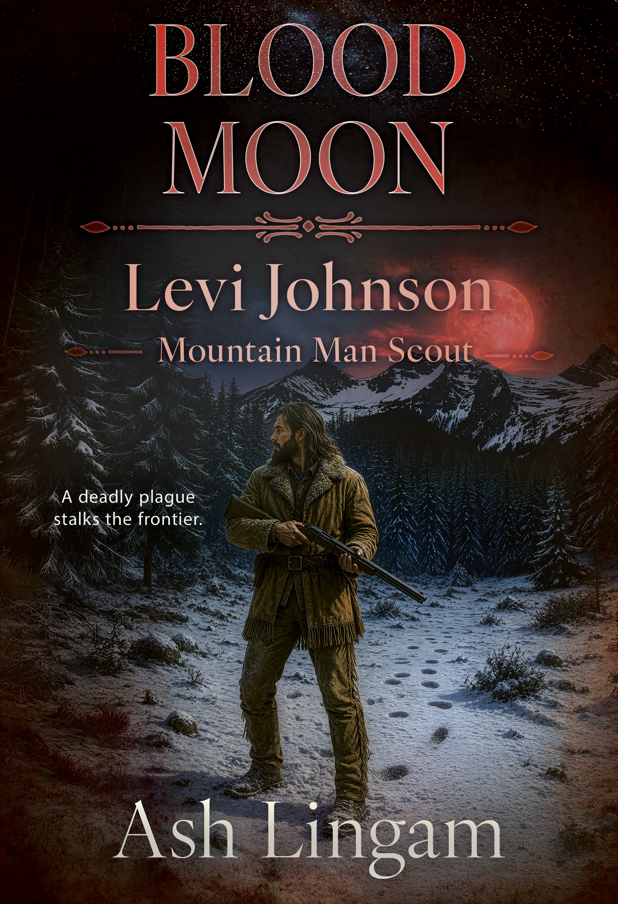
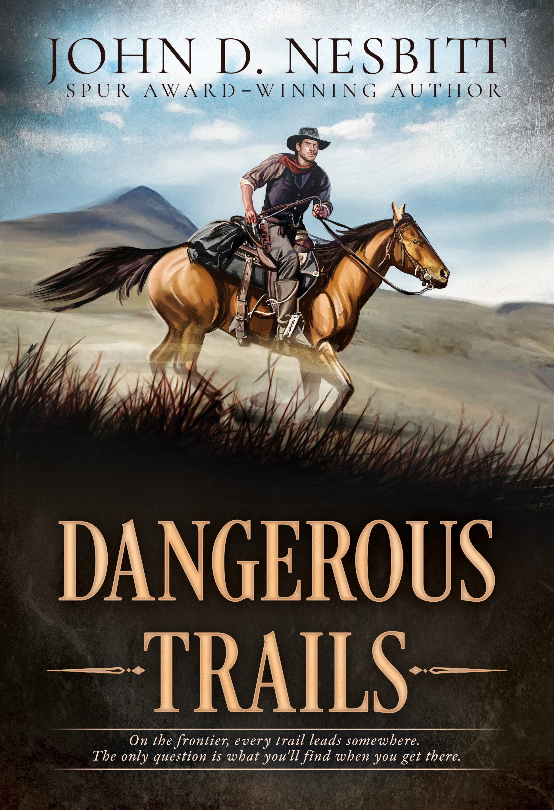

| View in browser |
 |
New from Wolfpack Publishing: twelve classic Western stories of courage and justice, plus a mountain-man adventure where rabies, ruthless enemies, and a brutal winter make the frontier deadlier than ever.Rugged stories for readers who like dust, danger, secrets, and no wasted motion. |
|

Blood Moon (Levi Johnson Mountain Man Scout 33)by Ash Lingam
A rabid wolf attack turns every day into a desperate fight for survival as Levi Johnson and Rusty Steel race the infected home. Meanwhile, stolen whiskey draws British spies, killers, and hostile warriors onto the trail—and winter is closing fast. Words from Ash Lingam Bad omens chase a blood moon. Bloody buffalo carcasses dot the Yellowstone Valley below Levi Johnson’s mountain home, and a wolf attack leaves only two hunters alive. Levi and Rusty Steel fear the pack is rabid. They carry the wounded men home, where Potak, the Tonkawa medicine man, works to keep the disease from spreading through the clan. Meanwhile, Captain Forrester discovers men selling liquor from a wagon loaded with twenty barrels of whiskey, and the deadly confrontation leads toward a showdown with the U.S. Army at Fort Boise. Readers often ask where my stories come from. It is a mystery to me, too. My grandfather taught me to trap, hunt, care for a horse, grow food, navigate by the stars, and make fire without matches. Those experiences became the foundation for Levi. I outline each chapter after I write it, letting gut feeling stir the action and emotion. Real life happens spontaneously—why should writing be different? I hope you enjoy Blood Moon. God bless. —Ash Lingam
Get Your Copy →
|
| |

Dangerous Trailsby John D. Nesbitt
Across twelve Western stories, cowboys, drifters, and ordinary people face extraordinary choices on lonely ranches, windswept prairies, and rough-edged frontier towns. Courage, justice, sacrifice, and redemption are never guaranteed—but every trail demands a reckoning. Words from John D. Nesbitt Dangerous Trails ranges from “Dutch and the Hired Man,” at a little over 2,000 words, to “Return to Laurel,” at more than 10,000. I enjoy writing at different lengths instead of being confined by cookie-cutter patterns. These stories are not pastoral rhapsodies or ranch romances. Most follow people going places and facing trouble, with humor and irony threaded through the danger. Several revisit characters from my novels, including Jimmy Clevis, Grey Wharton, and Dunbar. “Return to Laurel” was a 2020 Western Writers of America Spur Award finalist and a Western Fictioneers Peacemaker Award finalist; the collection won a third-place Will Rogers Medallion Award in the Short Stories category in 2021. A story collection is like an album: one strives for variety as well as continuity. I select each piece for content, tone, and overall quality, and I hope readers enjoy most—if not all—of the stories in Dangerous Trails. Best wishes. —John Nesbitt
Get Your Copy →
|
|
Wolfpack Publishing 1707 E. Diana Street, Tampa, FL 33610 Website Unsubscribe |
|